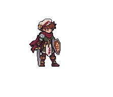

96 px hero
Native scale · 1 art pixel = 1 screen pixel
Original full-resolution design ↗A single active resource, at the same pixel scale as Tobin. Ore and gems sit inside their geological host. Trees keep their species silhouette and believable trunk height; smaller plants grow from their roots. Changing state keeps the ground anchor and scale.

Whole-pack review · current grades 1–5 · authored art and context study only. No gameplay, timing or runtime layout changes. Environment studies are reference backdrops, not replacements for approved world scenes.